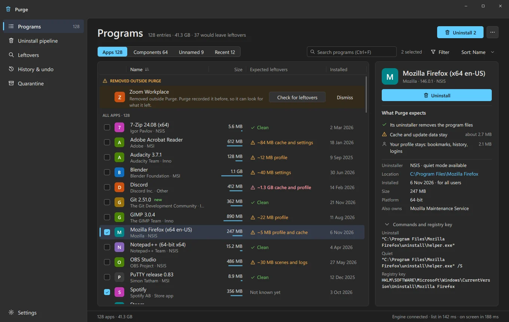
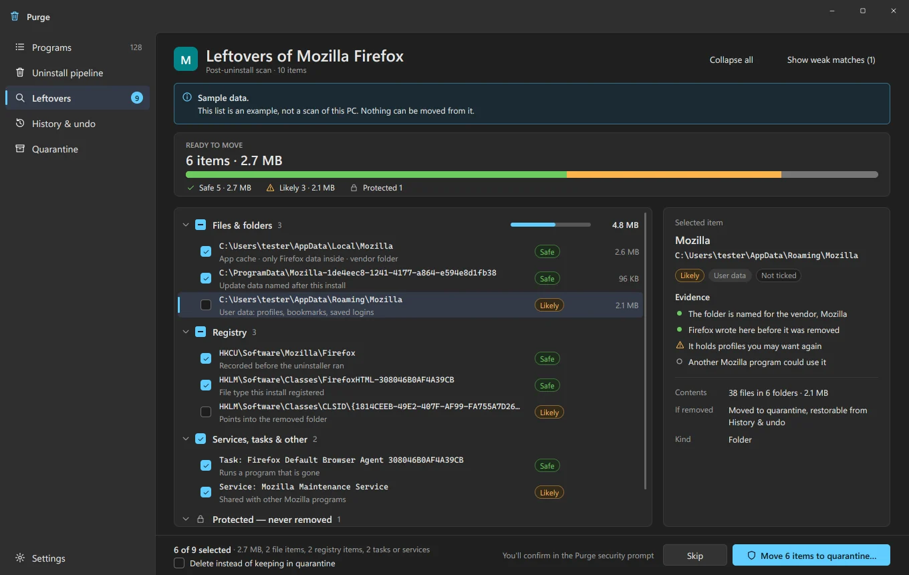

Most of Sprawl's look can be redrawn with this toolkit, because Sprawl already draws its own look on top of WinUI rather than using stock controls. The tokens, type, corners, tables, menus, dialogs, toasts and motion all have counterparts here. The one part that doesn't carry over directly is the tilted 3D treemap: it is Direct3D, and the toolkit draws on the CPU.
These were rendered on this PC from examples/purge_mockup.rs, the toolkit's redraw of Purge, which is also a WinUI 3 app. It is the nearest precedent for a Sprawl port. Its own docs say no person has reviewed these sheets yet.


This keeps the current layout and your live theme settings (Tinted surfaces, 6/10 corners, flat finish, outlined controls, Windows teal accent). The data is an example. The map is a flat cushion treemap, which a CPU painter draws easily. The tilted 3D map needs Direct3D; the options are under "What needs building".
| Element | Sprawl today (WinUI) | In the toolkit | Status |
|---|---|---|---|
| Text | Segoe UI Variable, XAML's greyscale anti-aliasing | Same font through parley and swash; ClearType subpixel by default, or Subpixel::None to match XAML exactly | Ready |
| Colours and tokens | tokens.rs (Ink, Tinted, finish tokens), plus a light rewrite at run time | Palette and Tokens. Your token maths ports as it is, and light becomes a second palette instead of a rewrite and reload | Ready |
| Corners, outlines, focus ring | rc2–rc14, 1 px line2, accent ring at 32% | rbox, frame, rbox_a and focus rings on keyboard use only | Ready |
| Soft depth shadows | shade.rs: Composition DropShadow, D2D clip and hand-made corners (1,141 lines) | soft_shadow, an exact Gaussian with CSS-style layers. The card, button and menu shadows from your Theme page map onto it directly | Ready |
| Mica, Acrylic | MicaBackdrop and DesktopAcrylicBackdrop | platform::set_backdrop and frost | Ready |
| Menus and the menu bar | Rebuilt by hand in menu.rs and menubar.rs (2,650 lines), because MenuFlyout clips shadows | menu::Menu and Cascade with access keys. A drawn menu bar is on feat/classic-widgets | Branch |
| Press styles | Lift and sink, press-in, fade, faint; VSM storyboards with split keyframes | Animator with springs and cubic_bezier. Offset, scale and wash are plain draw parameters, with no keyframe workaround | By hand |
| Tab row and sliding line | Buttons plus a Composition ShapeVisual (tabline.rs) | segments looks like a switch, not an underline. The line is one rbox moved by an Animator value | By hand |
| Tables | Own virtualisation in tables.rs with a 1,000,000 px scroll cap | rows, select and table::Table (sort, resize, saved widths), tested to a million rows with no scroll cap. Hiding columns is planned (L4) | Ready |
| Folder tree | Tree rows built inside tables.rs | FileTree reads the disk itself and stops at 4,000 rows, so it can't be used. Build it on rows, select and draw_disclosure_animated | Build |
| % bars, drive bar, chips | Borders and Rectangles | Listed as gaps in PURGE-MOCKUP; each is a few rbox calls | By hand |
| Buttons (primary, danger, subtle, with icon, dropdown) | Ten styles on one template | Dialog buttons only on main; classic::button on the branch. A real button set is still needed | Build |
| Icons | 53 Segoe Fluent Icons glyphs | 104 stroked path icons and no icon font. Segoe Fluent Icons is an ordinary font, so the text engine can draw it once a Face::Icons is added | Build |
| Fields | 40 TextBox, 14 PasswordBox, 20 ComboBox | textfield with IME and Dropdown. No password mask, no leading icon, no multi-line field | Build |
| Dialogs, flyouts, toasts, info bar | Own card on a scrim in ask.rs, plus Flyout | dialog_card, flyout, Stack, InfoBar. Dialog bodies don't scroll yet | Ready |
| Settings and the Theme page | Overlay card in wizard.rs and themepage.rs | settings::pages::Form plus appearance (radius, shadow, motion). Sprawl's own options sit on top of it | By hand |
| AI chat answers | Markdown turned into XAML Runs in ui.rs | Not in this repo. The renderer is in mdview's mdview-render and would have to be moved here first | Build |
| Treemap, flat 2D | Not offered | Painter boxes, gradients and clip, or a per-pixel cushion like the mockup's | By hand |
| Treemap 3D, City, Galaxy, View Lab | D3D11 into a SwapChainPanel with MSAA and HLSL | No GPU path. See the map options below | Build |
reconcile.rs diffing to stop rows flashing, generic.xaml template copies, AnimatedIcon crashes, Composition shadow plumbing, the hand-built MenuFlyout replacement and the reload on every theme change all disappear. Each was a fight with WinUI, not a feature.Sizes are rough: S is a day or less, M a few days, L a week or more. "Toolkit" means it belongs in mdshared-ui, so your other apps get it too. "Sprawl" means it belongs in the app.
Three ways to keep the 3D map. (1) Render with the existing gpu.rs offscreen, copy the frame back, and blit it into the painter's bitmap; overlays (HUD, legend, Tweaks) then draw on top in the same pass. This is the simplest and keeps today's look, at the cost of one GPU-to-CPU copy per animated frame. (2) A child window with its own swap chain; fast, but nothing the painter draws can overlap it, so the HUD would need its own window. (3) A GPU backend for the painter; the cleanest result and the largest job, and AGENTS.md rules a GPU out on purpose today. Recommended: (1), with a flat CPU cushion map as the fallback.
Rows plus depth, open state, lazy children and keyboard Left and Right, built on rows, select, TypeAhead and the animated disclosure. FileTree can't serve: it reads the disk itself and stops at 4,000 rows. Sprawl, a file manager and Purge's groups all need this.
Standard, primary, danger, subtle, icon only, icon plus label, drop-down button and toggle button, each with the press styles as parameters. Start from classic::button on feat/classic-widgets.
A Face::Icons that draws Segoe Fluent Icons code points through the text engine, so Sprawl's 53 glyphs keep their exact shapes. Keep the path icons for Linux.
A leading icon and a clear button, a password mask, and a multi-line field for the AI chat, with wrapping, scroll, IME and a selection that spans lines.
Move mdview-render into the toolkit, or a slim chat version of it, for the Advisor's AI answers. Code blocks, lists and links are enough, plus selection and copy.
Percent bar in a cell, a multi-colour bar, chips, badges and a determinate ring. All of them are already listed as gaps in PURGE-MOCKUP.
Tabs with badges and a line that slides on a spring. Pills as a second look, matching Sprawl's Tabs option.
ROADMAP L4 (hide and reorder columns), L5 (rename in place, which Sprawl's F2 needs) and L7–L8 (drag and drop). Sprawl uses the first two today.
shellmenu.rs (IContextMenu), CF_HDROP copy, file dialogs, elevation, the watcher and the MCP bridge only need an HWND, which winit gives. The toolkit's F7 shell menu is deferred, so keep Sprawl's own.
Multi-select over UIA (an AccessKit limit) and a pass with Narrator before release. Sprawl has 44 AutomationProperties today; keep that coverage or better it.
Surfaces, corners, chips, press, finish, controls, motion, bars, selection and small text, expressed as a Palette plus draw parameters. Easier than in XAML, since a choice no longer rebuilds the page, but there is a lot of it.
An alternative, and I think a real improvement. Today about 250 px of the 860 px window goes on chrome before the first row: title bar, menu bar, three header cards, the tab row and the map bar. Because the toolkit draws the title row itself, with snap layouts kept, the menu, drive picker and Scan button can share that row. The scan facts become one line with a clickable path. The map tools float on the map. The result is about 115 px of chrome, and the map gains about 100 px. The drive bar is split by file type, which the header card can't show today.
snap::set_maximize_button_rect). In WinUI it would mean SetTitleBar drag regions around interactive controls.Mockup B is a layout proposal, not something the port requires. It could be built in WinUI too, at the cost of fiddly title bar drag regions.
feat/classic-widgets (1 commit, 11-24, unmerged): a drawn menu bar, a column header and a button. Sprawl needs all three, but the branch has its own fixed dark look; it should move onto Palette before it merges.feat/stack-wait-lift (1 commit, today, unmerged): a toast waits until the others have lifted. Fits Sprawl's delete and update cards.wk/a11y, wk/deps, wk/auditfix, f/copy-in: already on main. The README's note that feat/linux will "become main" is out of date: main already contains it.host yet, so Sprawl would be its first real user.Before committing to the whole port, build one spike in the toolkit: the Tree View screen with a real 1.2-million-file scan, the types table, and the map through the GPU readback. Measure first paint, scroll and resize against 1.0.9. That answers the two open questions, CPU cost on a large window and the map, in about a week. The tree model, buttons and icon font built for it go into the toolkit either way.